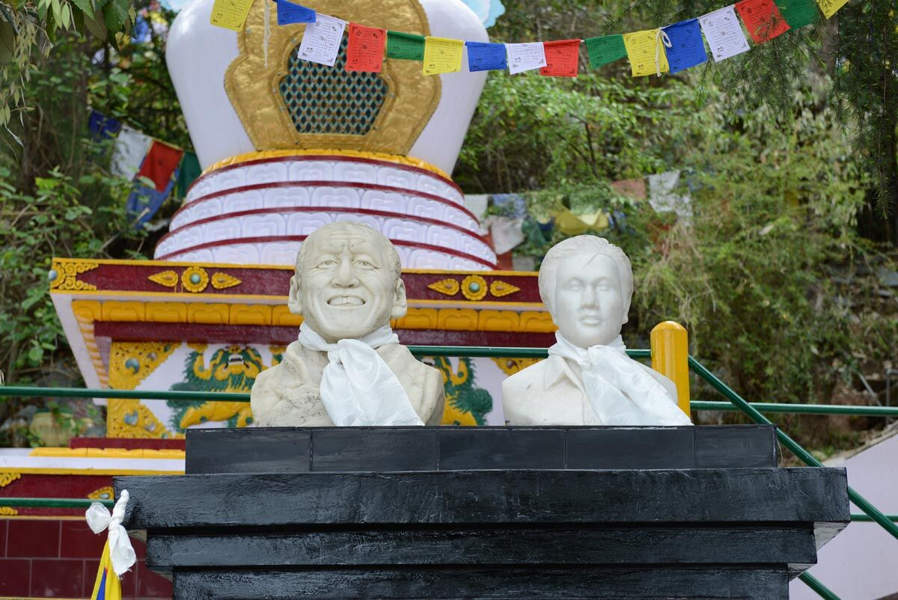
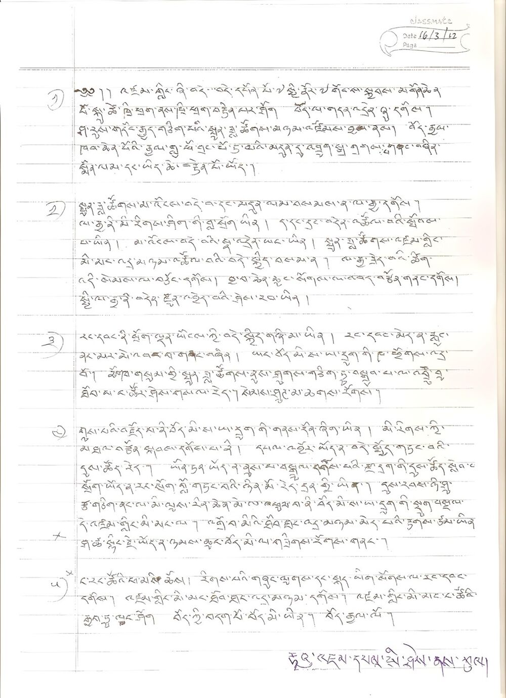

What the Fire Knew
One winter we went to Pong Dam, an earth-fill dam in Himachal Pradesh, India, known for its wildlife—especially birds that nest in winter and migrate from as far away as Russia and Tibet.

One winter we went to Pong Dam, an earth-fill dam in Himachal Pradesh, India, known for its wildlife—especially birds that nest in winter and migrate from as far away as Russia and Tibet. When evening fell and the sun went down, we started a bonfire. As the fire crackled, I heard tiny popping sounds and saw very small sparks flying into the chilly air. I looked carefully into the fire and witnessed insects emerging from the cracks of semi-dried logs, only to be caught up in the tongues of flame that warmed us.
I shivered, not from cold. Fire gives life and destroys it in the same act. I have known this since 2009 when the first self-immolation took place in occupied Tibet.
Early morning on 27th March 2012, I got a call from a friend in Delhi, the general secretary of the Tibetan Youth Congress. "A self-immolation has taken place and he has left a note behind.” “Can you do a quick translation?", she said. I could not even ask for the name, let alone any other details—there was too much commotion at the other end. Voices crowded the line. I simply said, “Send me an image of the note immediately.”
A few minutes later I flipped open my laptop to find a one-page handwritten letter. On the top right corner was the date in numerals: 16/3/2012. The rest of the five-point note was written in Tibetan uchen script.
Jampel Yeshi was 27 years old when he set himself on fire in New Delhi on 26th March to protest against Chinese rule and the visit of the then Chinese President Hu Jintao. Engulfed in flames, he ran through streets crowded with protesters and fell. Police and bystanders rushed to put out the flames, but he had already suffered burns over 90% of his body and died the next day.
On my computer screen, I typed out his last message—each sentence piercing my mind, each point tugging at my heart.
“Freedom is the basis of happiness for all living beings. Without freedom, six million Tibetans are like a butter lamp in the wind, without direction”, Jampel wrote. “If you have money, it is the time to spend it; if you are educated, it is the time to produce results; if you have control over your life, I think the day has come to sacrifice it. The fact that Tibetan people are setting themselves on fire in this 21st century is to let the world know about their suffering, and to tell the world about the denial of basic human rights.”
A couple of months earlier, I had received a call from another friend, the executive director of Students for a Free Tibet in New York, about a self-immolation that had taken place in Tibet. Before setting himself alight on 8th January in the Eastern Tibetan town of Golok, Lama Soepa left a recorded audio message. My friend said he needed the translation done immediately and shared the recording, which was found wrapped in Lama’s robe after his death. He was the first person to leave a recorded message as a testimony.
Listening to the voice of the quadragenarian Buddhist monk and deciphering his words into another tongue was viscerally painful and profoundly stirring. His voice was calm and his message filled with compassion and dignity, even as he was about to set himself on fire.
This is the twenty-first century, and this is the year in which so many Tibetan heroes have died. I am sacrificing my body both to stand in solidarity with them in flesh and blood, and to seek repentance through this highest tantric honour of offering one’s body. This is not to seek personal fame or glory… I am giving away my body as an offering of light to chase away the darkness, to free all beings from suffering, and to lead them—each of whom has been our mother in the past and yet by ignorance has been led to commit immoral acts. My offering of light is for all living beings, even as insignificant as lice and nits, to dispel their pain and to guide them to the state of enlightenment.
I sat at my makeshift desk on a cold winter’s day in Dharamsala and thought about Lama Soepa in Golok—known for its fiercely independent and ferociously rebellious people. I thought about our separation by the politics of occupation and censorship, and yet how we are bound by our non-violent resistance and struggle for freedom. I thought about how his burgundy robes crumbled and turned to ash under the weight of flames, sending sparks into the infinite blue sky.
Lama Soepa was one of the 159 Tibetans who have set themselves on fire since 2009 to protest against the Chinese occupation of their homeland. Nineteen of them left messages before carrying out their final act, and I translated all of them—each time bearing the weight of their unbearable pain and unimaginable sacrifice, devoid of hatred and vengeance towards the enemy. I am often left with sleepless nights thinking about the lengths to which human beings are capable of going for freedom and dignity, and for an end to occupation and subjugation.
Among these 159 Tibetans were 28 women, including Sangye Dolma. Days before her self-immolation, she took a selfie with 'བོད་རང་བཙན་རྒྱལ་ཁབ' (Tibet: An Independent Country) written on the back of her left hand and left a short poem as her last message.
…look, my Tibetan brothers and sisters / look at the land of snow / our destiny is on the rise / Tibet is an independent country.
While His Holiness the Dalai Lama / has been away for too long / travelling all over the world / Tibetans suffer under oppression / let’s pray for this darkness to be over …
She was 17 years old on the day she died from her burns.

Jampel Yeshi's last message, written ten days before his self-immolation, was found in his room in Majnu-ka-Tilla Tibetan Camp, Delhi, on 27 March 2026.
Image courtesy: Bhuchung D. Sonam.
Of the 159 Tibetans, 26 were younger than 18 years of age and 127 of them have died from their burns. Each was like a butter lamp in the biting cold wind, but their light has not gone out yet.
What lessons can we learn from them? Their moral courage and clarity of intention speak to our world. To live and die not only for oneself but for the goodness and wellbeing of everyone—'to dispel their suffering.’ The people in Tibet are deprived of all basic human rights and dignity, and driven to the point of annihilation. And yet without losing hope, without animosity, and with great equanimity—even as they set themselves ablaze—they had the presence of mind to leave such insightful messages behind. If those of us in general, and particularly our leaders, could draw lessons from them, the world would be far less violent and more humane.
For Tibetans, these acts are a constant reminder that freedom does not come without sacrifice—individually and collectively. Any dismissal of these last messages leaves the struggle for freedom more fragile and more morally adrift. Even as China labels the self-immolators as mentally unsound and accuses their relatives of being accomplices, Tibetans—particularly those in exile—must adamantly counter such distorted propaganda and assert their right to narrate these historic events as they unfold.
The last known self-immolation took place on 27th March 2022, when 81-year-old Taphun doused himself in kerosene and set himself ablaze—making him the oldest person known to have done so. On his 80th birthday, considered a milestone in Tibetan tradition, he had told friends and acquaintances: "It is certain that the sun of happiness will shine in Tibet. The young children should not become discouraged."
Living in exile for over 40 years, each day I live with a dream for a free Tibet, where I can walk across the plateau under the blue skies leaving behind the fear of fire.